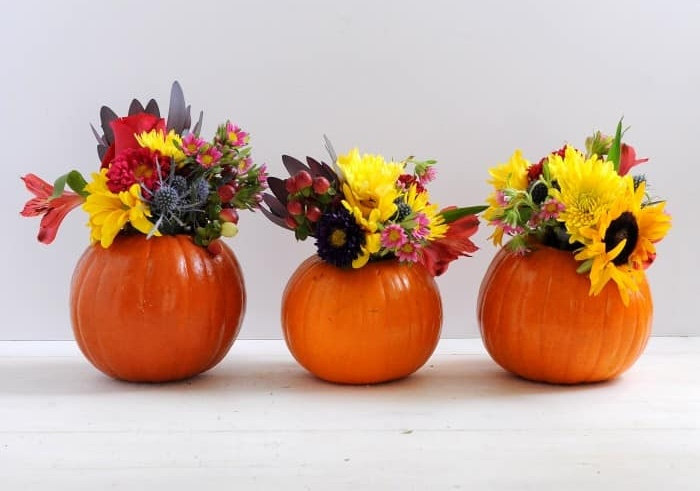
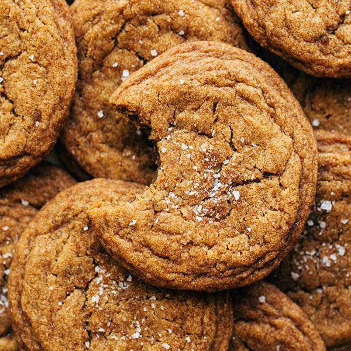
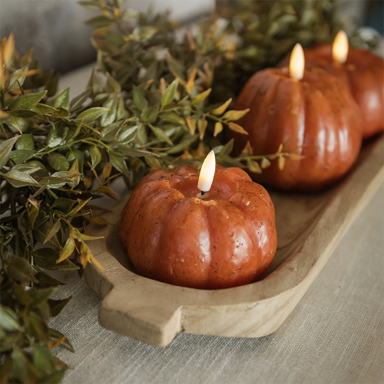
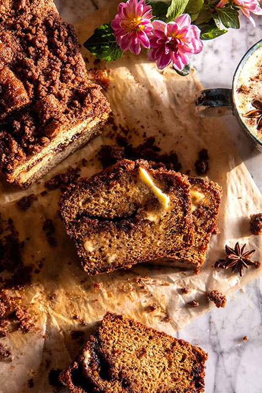

Holiday Recipes 2026
DIY Pumpkin Flower Vases

Equipment
- Mini pumpkins
- Knife
- Scissors
- Flowers
Materials
- 3 mini pumpkins
- 1 bouquet of fresh flowers
- 3 Votive candle holders
- floral foam
Instructions
- Cut the top off of each pumpkin and scoop out the seeds and pulp.
- Cut the floral foam to fit inside each pumpkin and place it inside.
- Trim the stems of the flowers and arrange them in the floral foam inside the pumpkins.
- Place a votive candle holder in each pumpkin and light the candles for a cozy fall ambiance.
Brown Butter Pumpkin Cookies

Ingredients
- 1 cup (220g) unsalted butter
- 1 1/2 cups (280g) dark brown sugar, packed
- 1 large egg yolk
- 3 tbsp pure maple syrup
- 1 tsp vanilla extract
- 1/3 cup (80g) pumpkin puree
- 2 1/4 cups (280g) all purpose flour
- 1 tsp baking soda
- 1/2 tsp baking powder
- 1/2 tsp salt
- 1 1/2 tsp pumpkin pie spice
- 1/2 tsp cinnamon
Instructions
- Preheat oven to 350°F (177°C) and line a baking sheet with parchment paper.
- In a medium saucepan, melt the butter over medium heat. Continue cooking, swirling the pan occasionally, until the butter turns golden brown and smells nutty, about 5-7 minutes. Remove from heat and let cool slightly.
- In a large mixing bowl, whisk together the brown sugar, egg yolk, maple syrup, vanilla extract, and pumpkin puree until smooth.
- Add the browned butter to the wet ingredients and mix until combined.
- In a separate bowl, whisk together the flour, baking soda, baking powder, salt, pumpkin pie spice, and cinnamon.
- Gradually add the dry ingredients to the wet ingredients and mix until just combined. Do not overmix.
- Drop spoonfuls of dough onto the prepared baking sheet, spacing them about 2 inches apart.
- Bake for 10-12 minutes or until the edges are set and the centers are slightly soft. Allow cookies to cool on the baking sheet for a few minutes before transferring to a wire rack to cool completely.
Flameless Pumpkin Candles

Bring the glow of autumn into your home with these orange flameless pumpkin candles,
available in three charming sizes and shapes. Each one is finished with subtle texture and an aged wash that gives it unique character.
Crafted with a real wax exterior for an authentic look, these battery-operated candles with 3D flames create a warm, cozy glow without
the melting mess or fire risk. Their organic finish makes them a perfect accent for Halloween vignettes, autumn tabletops, or festive
Thanksgiving centerpieces. A timeless seasonal staple you’ll enjoy decorating with year after year.
- Set of 3 assorted flameless pumpkin candles
- Size: 3”, 3.5”, and 4”
- 6-Hour Timer Function
- Easy On/Off Button
- Requires 2 AA Batteries
- Batteries Not Included
- Imported
Click here to purchase!
Cinnamon Crunch Swirled Banana Bread

Ingredients
- 1/4 cup granulated sugar
- 2 teaspoons cinnamon
- 4 overly ripe bananas, mashed
- 1/4 cup melted salted butter or coconut oil
- 1/4 pure maple syrup
- 2 eggs, at room temperature
- 2 teaspoons vanilla extract
- 1 1/2 cup all-purpose flour
- 1 1/2 teaspoons baking soda
- 1 teaspoon salt
Instructions
- Preheat the oven to 350° F. Butter a (9×5 inch) bread pan.
- Combine the sugar and cinnamon.
- In a bowl, stir together the mashed bananas, melted butter, maple syrup, eggs, and vanilla until combined. Add the flour, baking soda, and salt, and mix until just combined.
- To make the crunch. Mix the butter, brown sugar, flour, and cinnamon.
- Spoon half the batter into the prepared bread pan. Sprinkle with the cinnamon sugar and 1/4 cup of the crunch mix, reserve the remaining crunch mix for topping. Evenly spoon the remaining batter over the sugar. Sprinkle over the remaining crunch mixture.
- Bake for 50-60 minutes or until the center is just set. Remove and let cool for 30 minutes before cutting…or eat it warm with a smear of cinnamon butter. Enjoy!
Sources